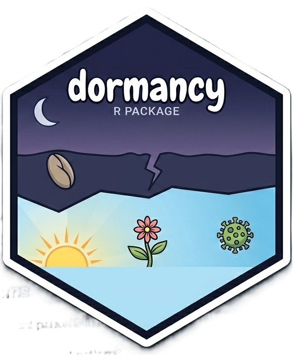

Identify Trigger Conditions for Dormant Patterns
dormancy_trigger.RdAnalyzes detected dormant patterns to identify the specific conditions under which they would activate. This function goes beyond detection to characterize the precise trigger mechanisms and their sensitivity.
Arguments
- dormancy_result
An object of class "dormancy" from
dormancy_detect.- sensitivity
Numeric. The sensitivity level for trigger detection, ranging from 0 (low sensitivity, only major triggers) to 1 (high sensitivity, minor triggers included). Default is 0.5.
- n_bootstrap
Integer. Number of bootstrap samples for confidence intervals. Default is 100.
- verbose
Logical. Whether to print progress messages. Default is FALSE.
Value
A list containing:
triggers- A data frame with trigger details: pattern_id, trigger_variable, trigger_type, threshold_value, sensitivity_score, confidence_lower, confidence_uppertrigger_map- A matrix showing trigger relationshipsrecommendations- Character vector of actionable insights
Details
Trigger identification is crucial for risk management and early warning systems. A dormant pattern might be triggered by:
Threshold triggers: When a variable crosses a specific value
Region triggers: When observations fall within specific data regions
Categorical triggers: When a categorical condition is met
Compound triggers: When multiple conditions align
Temporal triggers: When time-dependent patterns emerge
The function uses bootstrap resampling to provide confidence intervals around trigger estimates, ensuring robust identification even with limited data.
Examples
set.seed(42)
n <- 500
x <- rnorm(n)
z <- sample(c(0, 1), n, replace = TRUE)
y <- ifelse(z == 1, 0.8 * x + rnorm(n, 0, 0.3), rnorm(n))
data <- data.frame(x = x, y = y, z = factor(z))
result <- dormancy_detect(data, method = "conditional")
triggers <- dormancy_trigger(result)
#> Warning: No dormant patterns detected. Run dormancy_detect first.
print(triggers)
#> $triggers
#> data frame with 0 columns and 0 rows
#>
#> $trigger_map
#> [,1]
#> [1,] NA
#>
#> $recommendations
#> [1] "No dormant patterns to analyze."
#>